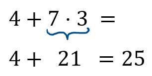
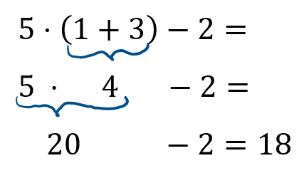
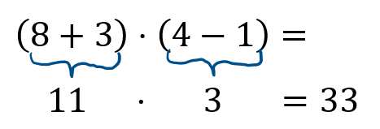
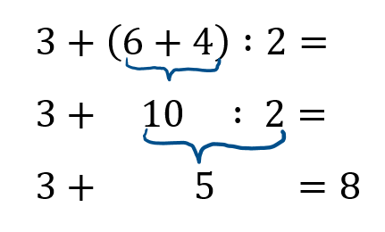

Ich versteh nur Bahnhof
Vorrangregeln KlaPuStri:
- Klammer: Beginne mit den Rechnungen, die in einer Klammer stehen!
- Punktrechnungen: Führe dann die Multiplikationen und Divisionen aus!
- Strichrechnungen: Führe die Additionen und die Subtraktionen von links nach rechts aus!
Die Klammer sagt: Zuerst komm ich!"
Denk ferner dran: "Stets Punkt vor Strich"
Und was noch nicht zum Rechnen dran,
das schreibt man unverändert an.



